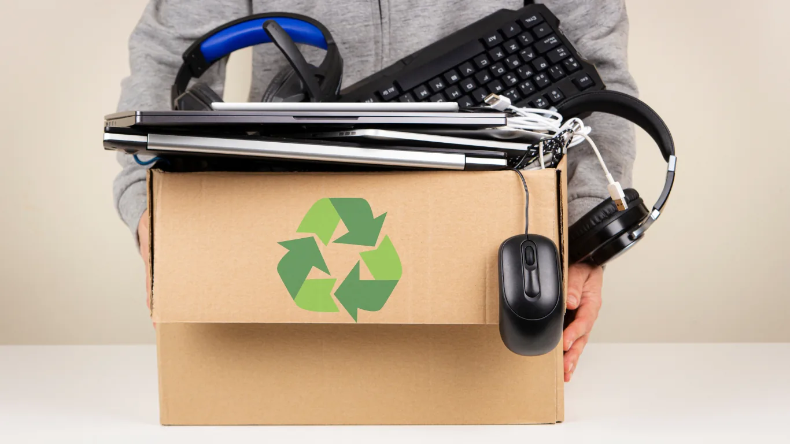

Business recycling silo
Refurbish & Recycle
Business laptop recycling, data destruction guidance, IT asset disposal, e-waste education and refurbishment knowledge for companies that need to clear technology responsibly.
Bulk laptop enquiries preferredData firstNo buy-back positioningJohannesburg business focus

Indexed recycling pages
Business pages built for the Google Search Console queries
These pages are designed to capture real search intent around laptop recycling, computer recycling, e-waste recycling, hard drive destruction, data protection disposal and IT asset disposal. The content speaks to business clients, not people trying to sell one old device.
Laptop Recycling Johannesburg for BusinessesBusiness laptop recycling in Johannesburg for companies, schools and offices clearing old laptops, hard drives, SSDs and chargers responsibly. No buy-back service.E-Waste Recycling in Johannesburg for Offices and IT TeamsE-waste recycling in Johannesburg for businesses with laptop-heavy batches, IT equipment, data-bearing devices and office electronics needing responsible disposal.Recycle Laptops in Johannesburg: Business Laptop Clear-Out GuideA Johannesburg business guide for recycling old laptops, MacBooks, drives, chargers and laptop accessories responsibly without treating TechRecycle as a buy-back service.Are Refurbished Laptops Reliable? A Business Buyer and Recycling GuideUnderstand refurbished laptop reliability, grading, testing, warranty expectations and when old laptops should be reused, repaired, harvested for parts or recycled.Computer Recycling Johannesburg for Businesses and OfficesComputer recycling in Johannesburg for businesses clearing old laptops, selected desktops, drives, chargers, accessories and IT equipment responsibly.Data Destruction Service for Business RecyclingData destruction service guidance for businesses recycling laptops, computers, hard drives, SSDs and storage media. Data handling before device recycling.Data Destruction Johannesburg for Business IT DisposalData destruction in Johannesburg for businesses clearing laptops, computers, hard drives and SSDs before recycling or IT asset disposal.Computer Recycling for Business IT EquipmentComputer recycling guide for businesses clearing old laptops, selected computers, storage media, chargers and small IT equipment responsibly.E-Waste Recycling for Business ElectronicsE-waste recycling guide for businesses handling old laptops, electronics, storage devices, chargers, accessories and responsible disposal planning.Laptop Recycling for Businesses: Old Laptops, Drives and ChargersLaptop recycling for businesses clearing old laptops, MacBooks, SSDs, hard drives, chargers and accessories responsibly. Bulk laptop enquiries preferred.IT Asset Disposal Johannesburg for Laptop-Heavy Business BatchesIT asset disposal in Johannesburg for businesses clearing old laptops, drives, chargers, tablets and small IT equipment. Bulk and laptop-heavy enquiries preferred.IT Asset Disposal for Businesses: Laptops, Drives and Small IT AssetsIT asset disposal guide for businesses clearing laptop fleets, storage media, accessories and small IT equipment with data-aware recycling steps.Why Data Destruction Matters Before Recycling Laptops and ComputersWhy businesses should handle data destruction before recycling old laptops, computers, hard drives, SSDs and IT equipment.
All recycle articles
Latest resources in this silo
Business enquiry
Have a laptop-heavy recycling batch?
Send a structured business enquiry. The fastest replies usually include device count, laptop quantity, storage media status, photos, and Johannesburg area.
- Best fit: businesses, schools, offices and IT departments with multiple devices.
- Primary focus: laptops, drives, SSDs, chargers and small IT assets.
- Important: TechRecycle is not a buy-back service for old computers.